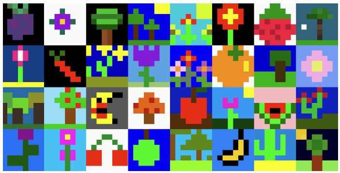

Modifica el código
 Vamos a diseñar nuestra propia matriz, para ello puedes tomar ideas de las imágenes que no porporciona el concurso AstroPi Mission Zero o puedes inventarte tu propio dibujo creativo.
Vamos a diseñar nuestra propia matriz, para ello puedes tomar ideas de las imágenes que no porporciona el concurso AstroPi Mission Zero o puedes inventarte tu propio dibujo creativo.
El tema de Mission Zero 2022/23 es 'Flora y Fauna'. Las imágenes pueden representar cualquier aspecto de este tema siempre que sigan las pautas oficiales, por ejemplo, flores, árboles, animales o insectos.
Aquí hay algunos ejemplos de imágenes creadas por los participantes de Mission Zero 2021/22.
